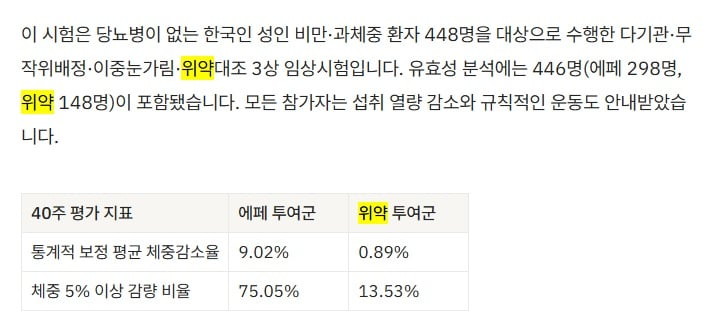

얼마나 약효과 구리면 위약이랑 비교해요?
약효가 전혀없는 가짜약 플라시보랑 비교하는거 안부끄럽나요?
이딴걸 누가 돈주고 써요
한국인 체형에 맞는다는둥 위고비 마운자로 부작용이 심하다는둥 개소리 그만하고
니들 직원이 다 처맞으라구요
모든참가자는 섭취열량도 줄이고 운동도 시켜놓고 뭔 효과가 있다고 홍보를 처하고 다니세요
지금 90년대도 아니고 이런 네거티브 선동이 먹힐꺼라고 보는건가

얼마나 약효과 구리면 위약이랑 비교해요?
약효가 전혀없는 가짜약 플라시보랑 비교하는거 안부끄럽나요?
이딴걸 누가 돈주고 써요
한국인 체형에 맞는다는둥 위고비 마운자로 부작용이 심하다는둥 개소리 그만하고
니들 직원이 다 처맞으라구요
모든참가자는 섭취열량도 줄이고 운동도 시켜놓고 뭔 효과가 있다고 홍보를 처하고 다니세요
지금 90년대도 아니고 이런 네거티브 선동이 먹힐꺼라고 보는건가
에페가 위고비 마운자로에 비해서
나중에 나온주제에 특별히 가성비있지도 않아서
욕먹는거지 효과가없는건아님
제정신인가? 라고생각된다면
나름이유있는게 글로벌제약사에 팔았던건데
권리반환하고 다시 한미에서 출시함
반환한 이유는 마운자로나 위고비에 비해
제조원가가 높은데 효과는 적어서
마진이나 경쟁력이 없다고 판단한것같음
다른 사업에 집중하기위해 포기한다고 했는데
그건 그냥 하는말이고 돈버는데 포기할이유가 없지
그래서 이래저래 돈은 벌어야되니
위고비 마운자로 가성비에 맞춰서 턱밑쯤으로 정해서 파는것같음
제조원가가 얼마나 높은지는 모르지만
나름 계산때린것같은데 굳이 에페를 써야할만큼
메리트있지가 않은게 문제
에페 근데 삭센다랑 좋은승부 아닌가?
위고비 마운자로랑 비비는 언플은 좀
삭센다 아직도 팔어? 진작에 사라진줄
같은 효과를 지니고
심지어 엄청나게 저렴한게 이미 있다!!
물(Water)
왜 효과가 없어? 니들이나 안쓰겠지. 이제 병원에서 의사가 에페권하고 환자는 그냥 알았다하고 쓰는게 태반일걸ㅋㅋ 젊은 사람이나 위고비나 마운자로로 맞겠다고 얘기하지 나이든 사람들은 그냥 의사가 하라고 하는대로 간다ㅋㅋ
직원 어서오고
늙은냄새나
ㅇㅎ 어르신들 등처먹는 약이구나
위고비 마운자로 의사가 권할 정도 고도비만은 노인이 못돼
위고비(노보 노디스크). 미국·유럽 및 국내 출시 초기 공식 발표에서 "위약 투여군(2.4%) 대비 약 6배 이상 높은 평균 14.9% 체중 감량"이라는 문구를 전면에 내세워 홍보했습니다
https://mediwatch.co.uk/guides/mounjaro-vs-wegovy
마운자로(일라이 릴리). 출시 당시 "위약(3.1%) 대비 최대 20.9% 감량, 환자 3명 중 1명은 체중의 25% 이상 감량"이라는 위약 비교 수치를 핵심 홍보 자료로 사용했습니다. 이후에는 위고비와의 1:1 직접 비교 임상(SURMOUNT-5) 데이터를 추가로 활용해 우월성을 홍보하고 있습니다.
https://www.hemed.com/blog/wegovy-vs-mounjaro
그냥 다들 하는건가본데 왜 화나있는거임
'얼마나 약효가 구리면 위약이랑 비교해요?'
이 한문장 만으로 얼마나 아는게 부족한지 보임 ㅋㅋㅋㅋㅋ
원래 저런거 위약 비교수치 같이 공개하는 건데
에페가 효과 좆구린거랑 별개로
ㅈ도 모르면서 혐오하고 싶어 안달난거 같음
의문의 쉴드단들 등장까지 온거같은데
다음 단계는 허위사실로 인한 영업방해로 고소전 들어갈차례인듯
이제 몸좀 사려야 된다 개붕이들아~ 상대는 정부와 친하다는걸 기억하자~~
에페 개병신, 쓰는 사람도 병신인거 맞는데
글쓴이가 병신같은 소리하는걸 까는거지
의문의 실드단 이지랄 하고 있네 ㅋㅋㅋ
위약과 비교하는건 약이면 당연히 하는거다 개붕아..
저건 위약보다 효과 좋다는 의미가 아니라
에페 효과가 플라시보 이펙트가 아니라는걸 보이는거야..
나는솔직히 가격이라도 저렴했으면 옹호할생각이였거든?
위고비 마운자로 맞다가 멈출때 사용하는 용도로 최고일테니깐
근데 시발 가격이 그따구인데 그걸왜맞냐고
위약이랑 비교하는건 당연한거지 바보야
이런 멍청한 글이 추천을 200개를 넘게 받는 현실이라니ㅋㅋㅋㅋㅋ
약효는 위고비, 마운자로 보다 떨어질 수 있지
그럼 씨발 가격이라도 싸야 하는데 이새끼들 가격 보면 얼탱이가 없음 ㅋㅋㅋ